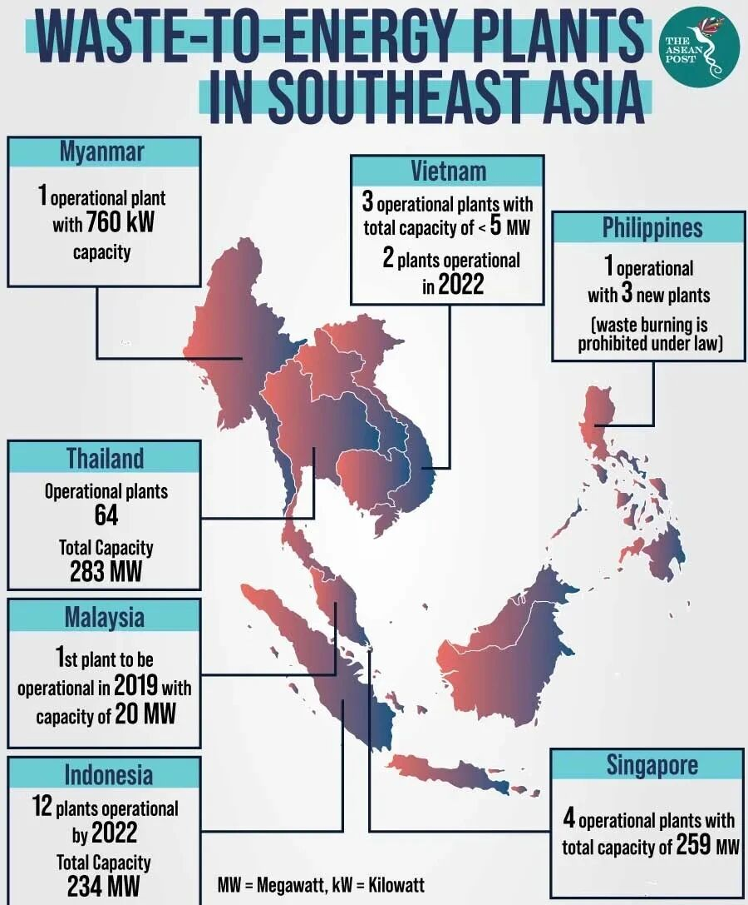
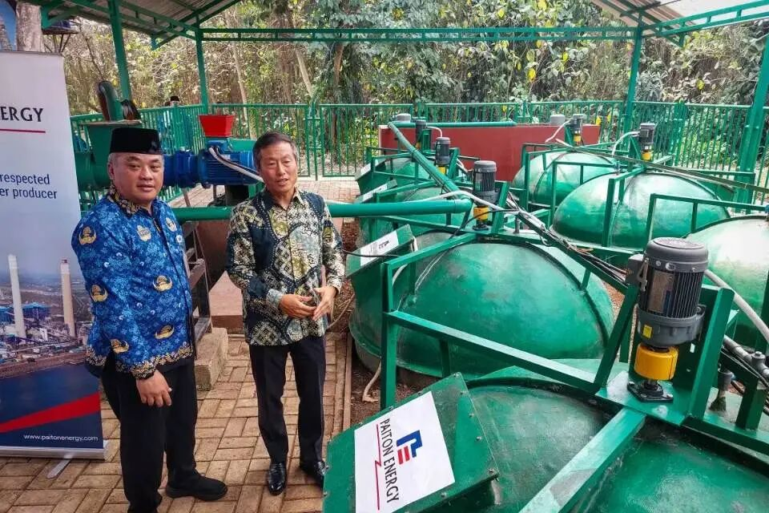
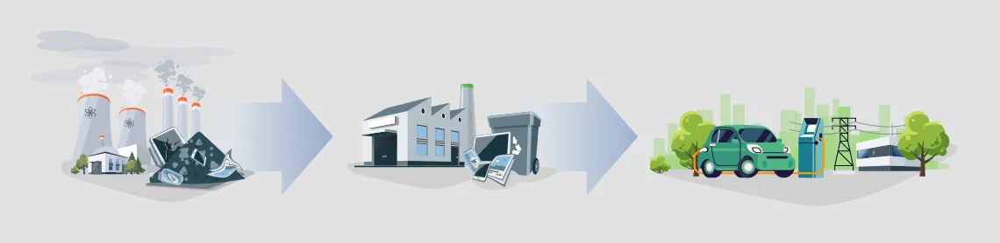
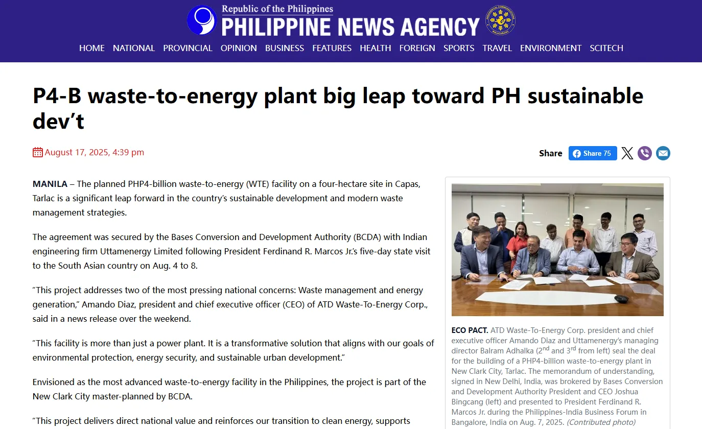
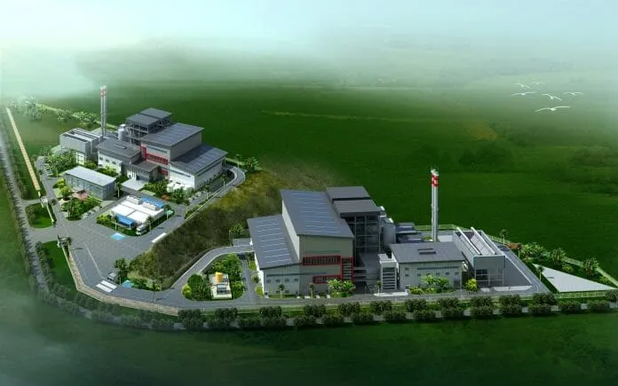
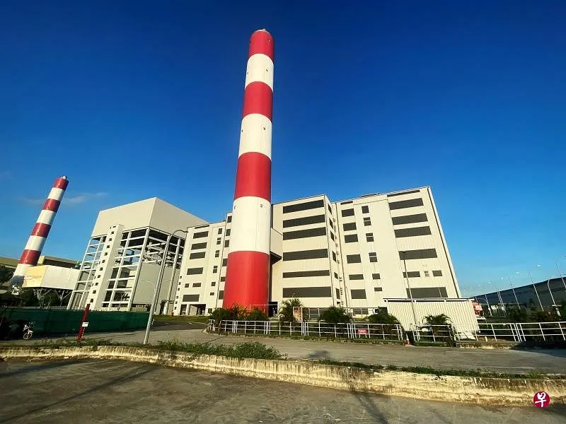
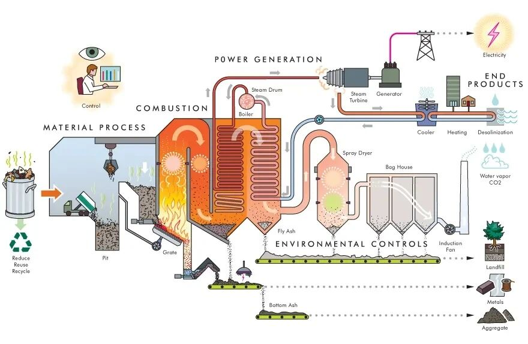
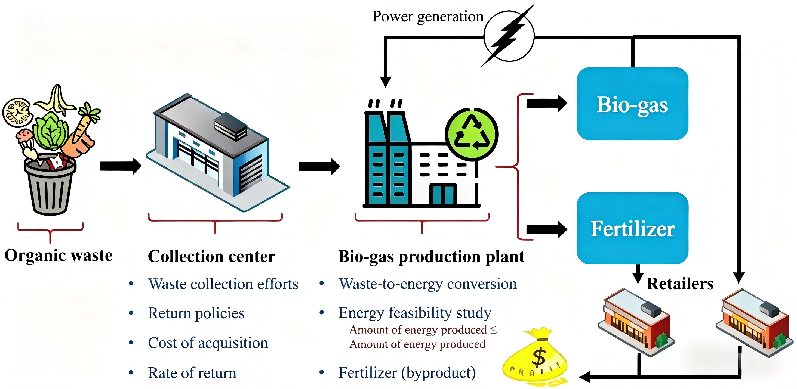

Is There Not Enough Garbage to Burn in China? A Quick Look at the Global Waste-to-Energy Industry Growth Trend Map
Key Points
- Southeast Asia is becoming the most attractive frontier market for waste-to-energy because policy urgency, urbanization, and capacity gaps are aligning at the same time.
- India has extraordinary scale but remains operationally complex due to feedstock quality, project execution risk, and weak local implementation conditions.
- Waste-to-energy economics depend on a three-sided balancing act among waste handling fees, electricity revenue, and policy support.
- The most resilient opportunity lies in identifying structural dividends across regions rather than treating the industry as a uniform global market.
1. Regional Trends: The Six Major Global Battlefields of Waste-to-Energy
As urbanization accelerates, waste volumes continue to rise, and carbon-neutrality agendas expand across multiple regions, waste-to-energy is becoming an increasingly important infrastructure and energy solution. According to market estimates, the global WtE sector is expected to grow substantially by 2030, supported by both environmental pressure and energy-system demand. Yet this is not a uniform market. Different regions are moving at different speeds, with very different institutional strengths, financing conditions, and feedstock realities.
Southeast Asia (SEA) — The Most Worthwhile Frontier Market Globally Right Now
Southeast Asia stands out because it combines urgent landfill pressure, rapidly rising municipal waste generation, and a clear policy push toward renewable and low-carbon solutions. Countries such as Indonesia, Vietnam, the Philippines, Thailand, and Malaysia are all moving in this direction, but at different levels of maturity. The region's appeal lies not only in high growth rates, but also in the current shortage of both heavy-asset operators and light-asset infrastructure for sorting, RDF production, digital management, and carbon monitoring.

Indonesia is among the strongest policy signalers in the region. Presidential Regulation No. 35 of 2018 introduced a dual revenue structure of feed-in tariffs and tipping fees for waste-to-energy projects, though implementation was slow due to local fiscal constraints. In 2025, a new regulation (Presidential Regulation No. 109) shifted the model: the state-owned electricity company PLN now pays the entire project revenue through a power purchase agreement, eliminating reliance on local government tipping fees. The policy also expands the scope to include bioenergy and liquid fuels, and plans to channel state funds through "Patriot bonds". Officials have explicitly framed these projects as strategic infrastructure that both solves the urban waste crisis and reduces imported fuel dependence.

Vietnam has embedded waste-to-energy into its long-term power planning. The revised Power Development Plan VIII (PDP8) classifies waste incineration as renewable energy, prioritizing projects that can support urban electricity demand. In early 2025, Minister of Industry and Trade Nguyen Hong Dien stated that the ministry would give priority to waste-to-energy projects with concrete implementation plans, allocating cross-provincial capacity to large cities with sufficient waste volume and land. Hanoi's first large-scale waste-to-energy plant, built by Hitachi Zosen in partnership with a local firm and backed by Japan's NEDO, is designed to process thousands of tons per day and serves as a model for foreign EPC–local utility cooperation across the region.
Thailand started earlier and is now in an "upgrading" phase. Dozens of small-to-medium-scale waste-to-energy and RDF-fuel plants have been launched around metropolitan areas, often led by local industrial park developers such as WHAUP. Their model—combining industrial parks with waste-to-energy to provide combined heat and power—is seen as a double solution for industrial decarbonization and municipal waste reduction.

The Philippines, despite early restrictions under the Clean Air Act, has recently accelerated on plastic reduction and waste-to-energy. The Department of Energy's Philippine Energy Plan 2023–2050 includes a dedicated chapter on waste-to-energy, integrating it with collection, recycling, and disposal strategies. As of 2023, 13 waste-to-energy facilities (ranging from 100 kW to 12 MW) were registered with the Department, and a new round of feasibility studies and tenders is underway in Metro Manila.

Malaysia brought its first large-scale waste-to-energy plants online around 2019, and has since steadily increased the share of waste-to-energy in its national renewable energy plan, subsidizing feed-in tariffs through the Energy Commission and the Renewable Energy Fund.

Singapore acts as a "technology showcase and regional capital exporter". It built multiple large waste-to-energy plants decades ago, such as the Tuas South incineration plant, one of the world's largest single-unit facilities, which provides baseload power and steam. This not only consolidated Singapore's engineering capability but also serves as a reference for its engineering firms bidding on similar projects across ASEAN.

India — The World's Largest Single Growth Market (Massive Scale, but High Complexity)
India represents a classic case of enormous latent demand constrained by difficult execution. Waste volumes are huge, landfill pressure is intensifying, and the central policy direction increasingly treats waste-to-energy as a necessary part of urban waste governance. However, Indian projects have repeatedly struggled with low calorific value, high moisture content, poor preprocessing, unstable project delivery, and inconsistent local enforcement. The market is therefore massive, but not simple.
India's waste-to-energy journey has been long and difficult. The country's first municipal solid waste power plant was built in Delhi's Timarpur in 1987 by Danish company Volund Miljotecknik, designed to process 300 tons per day and generate 3.75 MW at a cost of about USD 4.4 million. However, the plant ran for only about 20-21 days during trial operations. The design required a net calorific value of at least 1460 kcal/kg, but actual incoming waste measured only 600-700 kcal/kg. Attempts to use diesel auxiliary fuel could not sustain stable operation. That failure exposed a deep misjudgment of Indian waste composition and preprocessing needs, and made policymakers hesitant about incineration for many years.
In recent decades, under mounting landfill pressure in major cities, a second wave of waste-to-energy construction has emerged, but results remain highly uneven. Studies and media reports indicate that most municipal projects have failed to operate stably for long periods. Delhi is a telling example. The three existing plants at Okhla, Ghazipur, and Narela-Bawana have a combined nameplate capacity of about 52 MW and process thousands of tons per day, but have repeatedly been penalized by environmental authorities and courts for exceeding emission limits. In 2017, the National Green Tribunal fined the Okhla plant. In 2021, the Delhi Pollution Control Committee fined all three plants for violating dioxin and furan standards. Between 2024 and 2025, residents and environmental groups protested against capacity expansions and a proposed new Bawana plant, arguing that the area is already an air pollution hotspot.
The root problems are not technical infeasibility but weak front-end systems and institutional design. Source segregation and preprocessing remain inadequate. CPCB data and audit reports show that waste entering plants is still mixed with high moisture content, resulting in low calorific value and forcing operators to use auxiliary fuels, raising costs and causing incomplete combustion. Regulatory enforcement has also been weak. Fines have been modest relative to project scale, without a real stop-revise-resume loop. PPP contracts often lack clear provisions on waste supply, calorific value, and government payment obligations, leading to disputes between project companies and local governments and leaving plants unwilling to burn and governments unwilling to admit failure.
This makes India especially challenging for early-stage investors and lightweight entrants. The opportunity is real, but it is much better suited to large-scale operators, EPC firms, and technically mature players that can manage both engineering risk and institutional friction. In other words, India is a high-potential market whose complexity is not a side issue — it is the defining feature.
China — Mature but Still with Room for Structural Innovation (Especially the Going Global Dividend)
China is already the world's largest and most mature waste-to-energy market, with over 400 operating plants, globally leading technical efficiency and cost control, and top-tier operators with world-class technology, capital, and operational expertise. However, the domestic market has passed its explosive growth phase. The more interesting opportunities now lie in global export: Chinese EPC contractors are widely used in Southeast Asia, Central Asia, the Middle East, and Africa, offering cost advantages of more than 30%, shorter construction periods, and rich operating experience. At the same time, light-asset innovation still has room in areas such as emissions control technology, digital intelligent operations and maintenance, AI-powered sorting, and MRV systems for carbon reduction measurement.
Middle East (GCC) — High Payment Capacity, Strong Policy-Driven Push, but Limited Number of Projects
The Gulf markets are attractive for a different reason: they often offer high payment capacity and clear government support, which can produce high-quality, financeable projects. However, the total number of such projects remains relatively limited, and barriers to entry are high because public procurement is concentrated and local relationships matter enormously. This makes the region a strong fit for major EPC firms and established industrial players rather than broad-based startup expansion.
Central Asia — Strong Government Will, but the Market Is Still Immature
Central Asia presents a structurally interesting but still immature opportunity. Governments are eager to modernize urban governance and improve waste treatment systems, yet the market often lacks the density, fee levels, and supporting systems needed for large conventional WtE facilities to perform economically. That creates more room for modular, digital, and fuel-conversion approaches than for textbook large-scale incineration rollouts.
Africa — The Last Great Potential Market, but the Time Window Is Still Early
Africa has strong long-term potential because waste volumes are growing rapidly and urbanization remains fast, yet the investment-grade conditions needed for large-scale WtE are still weak in most places. Gate fees are often low, fiscal capacity is limited, logistics remain difficult, and project finance still depends heavily on external support. This is a major future market, but in many cases not yet an immediate one.
2. Economic Analysis: How Does Waste-to-Energy Achieve Profitability? Does the Math Add Up?
Once the regional trend is clear, the central project-level question becomes unavoidable: how does a waste-to-energy plant actually make money, and does the model hold up? The answer varies dramatically across countries because technical maturity, public finance strength, and waste composition differ widely. These differences shape revenue structure, cost structure, and the possible range of project returns.
Revenue Structure: How Does WtE Actually Make Money?
In many emerging markets, the most important revenue source is the gate fee — the payment cities make to have waste safely processed. This is often more important than electricity itself when waste calorific value is low or output is unstable. Additional revenue comes from feed-in tariffs or long-term PPAs, renewable-energy policy support, and in more advanced markets, steam supply, bottom ash recovery, metals recovery, or even carbon-credit monetization. In mature systems, electricity and by-products can be the main drivers. In fiscally weaker markets, gate fees and policy support often carry far more weight.

Cost Structure: High CAPEX, with OPEX Dominated by Treatment Costs
Compared with conventional thermal power, WtE is far more capital intensive. The incinerator, boiler, turbine, and power generation equipment are only part of the picture. Flue-gas treatment, leachate handling, and waste preprocessing systems also add heavily to project cost, often making capital expenditure significantly higher than for standard fossil-fuel plants. On the operating side, the key cost drivers are not fuel procurement, but labor, maintenance, chemicals, spare parts, fly ash management, leachate treatment, and environmental compliance.
The more demanding the emissions standard, the more expensive the plant is to operate. And when actual waste composition differs sharply from what the plant was designed for — especially when incoming waste is wet, mixed, and low in calorific value — the cost model can deteriorate rapidly. This is one reason why some projects look viable on paper but lose money in practice.
3. Competitive Landscape and Value Chain: Who Is Making Money, Who Is Barely Holding On? Where Is the Value Created?
Complete Industry Chain Breakdown: From Doorstep Waste Collection to Grid-Connected Electricity
The WtE value chain can be summarized as waste collection and transport, sorting and preprocessing, incineration or thermal conversion, power generation, flue-gas and environmental treatment, and long-term operations and maintenance. Front-end collection and sorting determine what kind of feedstock actually enters the plant. The middle stages are capital intensive and engineering heavy. Emissions treatment is where regulatory pressure is strongest. And operations determine whether a project becomes steadily profitable or operationally fragile over time.

Which Segments Are Highly Profitable? Which Segments Are the Most Crowded and Competitive?
The most profitable and defensible segments are core equipment and flue-gas treatment. Incinerators, boilers, steam turbines, grate systems, and flue-gas cleaning equipment are dominated by a few international manufacturers such as Hitachi Zosen, CNIM, Keppel Seghers, and China's top three environmental protection equipment firms (Everbright Environment, Shanghai Electric Environmental Protection, CECEP). These segments have slow technology iteration, high per-project value, strong bargaining power, and typically generate long-term spare parts and service revenue. Their profit margins are significantly above the industry average.
Medium-profit but most crowded is EPC and civil construction. Waste-to-energy plants require large-scale civil works and long construction periods, with many local EPC players and strong dependence on local construction capability. This segment is often the most competitive: bid prices are driven down, margins are thin, yet risks (schedule, cost, compliance) are real. For international equipment suppliers, EPC is more about bundling with equipment sales than profit core.
The thinnest margins and highest commercial risk are in back-end operations and maintenance (O&M) and government payment mechanisms. Although cash flows appear stable, variables such as waste composition fluctuations, calorific value changes, and rigid emission treatment costs can quickly erase operating profits. In markets such as India, Indonesia, and the Philippines, many projects lose money precisely because poor sorting leads to high-moisture waste entering the plant, driving up auxiliary fuel and chemical costs, while gate fees and PPAs cannot cover the rising operating expenses.
Main Player Types: Who Plays What Role in the System?
Four types of players tend to define the system. International EPC firms and technology suppliers control the most technically defensible part of the stack. Local operators, public utilities, or PPP vehicles usually bear the burden of long-term execution. Governments shape the market by controlling waste supply, setting prices, and defining environmental standards. Finally, light-asset technology providers — such as digital waste-management systems, AI sorting solutions, carbon-measurement tools, and process-optimization platforms — represent the highest-value but still relatively narrow layer of the market.
4. Conclusion: Structural Dividends and the Window of Opportunity
A clear divergence is emerging in the global waste-to-energy landscape. Heavy-asset projects provide public-infrastructure certainty but tend to offer lower upside. Light-asset innovation, by contrast, is where efficiency, capital returns, and differentiated growth are more likely to emerge. The right strategy depends not just on the technology, but on the institutional setting of each region.
For stable, long-duration capital, the heavy-asset path can make sense when public payment capacity, waste logistics, and policy support are all aligned. For venture-style or growth capital, the stronger opportunities lie around digitalization, measurement, AI sorting, RDF systems, emissions management, and international technology transfer. The important point is that WtE should not be treated as a single global category. It is a structurally segmented market, and the real returns will come from understanding where those structural dividends are actually forming.
- [1] Pinsent Masons. Waste-to-energy in Indonesia: Opportunities and challenges. Out-Law Analysis. pinsentmasons.com/out-law/analysis/waste-to-energy-indonesia-opportunities-challenges.
- [2] AHP Law Firm. Client Update: Waste-to-energy regulatory framework in Indonesia. ahp.id, November 17, 2025. ahp.id/clientalert/AHPClientUpdate-17November2025.pdf.
- [3] Southeast Asia Infrastructure. The dual advantage of waste-to-energy deployment in Indonesia. southeastasiainfra.com. southeastasiainfra.com/dual-advantage-waste-to-energy-deployment-in-indonesia.
- [4] Viet Nam News. MOIT to submit revised Power Development Plan VIII by February 2025. vietnamnews.vn. vietnamnews.vn/economy/1689982/moit-to-submit-revised-power-development-plan-viii.
- [5] International Trade Administration (ITA), U.S. Department of Commerce. Vietnam - Power Generation, Transmission, and Distribution (Country Commercial Guide). trade.gov. trade.gov/country-commercial-guides/vietnam-power-generation-transmission-and-distribution.
- [6] WHA Utilities & Power (WHA-UP). Waste-to-energy solutions. wha-up.com. wha-up.com/en/power/waste-to-energy.
- [7] House of Representatives of the Philippines. House Bill No. 1636: Waste-to-Energy Act (draft). docs.congress.hrep.online. docs.congress.hrep.online/legisdocs/basic_20/HB01636.pdf.
- [8] MarkNtel Advisors. Southeast Asia Waste-to-Energy Market Research Report. MarkNtel Advisors. marknteladvisors.com/research-library/waste-energy-market-southeast-asia.
- [9] International Energy Agency (IEA). Southeast Asia Energy Outlook 2024. IEA Publications. iea.blob.core.windows.net/assets/ac357b64-0020-421c-98d7-f5c468dadb0f/SoutheastAsiaEnergyOutlook2024.pdf.
- [10] The Times of India. Model waste-to-energy plant a ‘toxic hazard’ for Delhi, report says. Times of India. timesofindia.indiatimes.com/city/delhi/model-waste-to-energy-plant-a-toxic-hazard-for-delhi-report.
- [11] The Indian Express. Green clearance for Bawana waste-to-energy plant obtained after false statements, residents allege. Indian Express. indianexpress.com/article/cities/delhi/green-clearance-for-bawana-waste-to-energy-plant-obtained-after-false-statements-residents-allege-10316861.
- [12] Central Pollution Control Board (CPCB), India. Annual Report on Municipal Solid Waste (MSW) 2020-21. cpcb.nic.in. cpcb.nic.in/uploads/MSW/MSW_AnnualReport_2020-21.pdf.